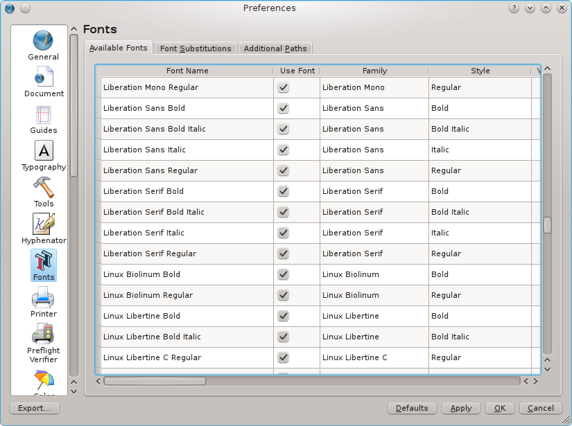
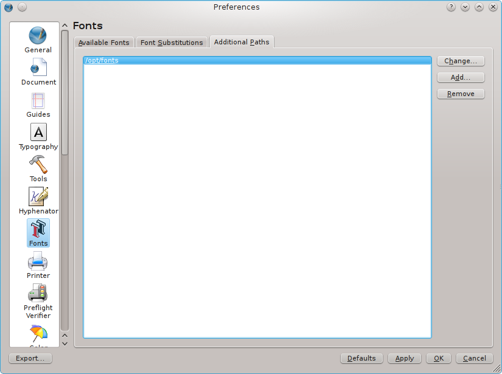

Fonts are one of the major ingredients in Desktop Publishing. Hence, Scribus provides some powerful tools for managing and previewing fonts.
The most important font tools are available via the Document Setup and Preferences dialogs (for the difference between both see the section about Configuring Scribus) in the Fonts tab.
Both dialogs look the same, which might be a bit confusing at first glance, as some options are probably grayed out. However, there is some logic behind the mechanisms, as you will see.
The first tab (“Available Fonts”) initially shows the fonts detected by Scribus during its first launch. It depends on the operating system which directories or system settings will be searched for fonts (see below). If you open an existing document, Scribus will also search for font files in the document path, which is another word for the directory, in which your Scribus file is currently being stored.
The “Available Fonts” tab consists of many columns, some of which only provide information about a font, while others allow for changing Scribus’s handling of a font – either in an existing document or in every future document. Let’s have a look at these rows one by one:
|  |
When opening a Scribus document, Scribus runs a check to see if all fonts listed in a document are available. In case a given font is not available on your computer or a network directory, Scribus, upon opening the doc, will ask you to choose a substitution:
|
You can can later adjust or change your choice in the “Font Substitutions” tab. This allows you to change the original substitution pattern, either for the current document or all newly created documents.
 |
One of the challenges in font management is the way different operating systems provide access to fonts and handle them internally. For example, Windows, OS/2, eComStation and Haiku use a single system-wide directory (Windows: C:\Windows\Fonts; OS/2 and eComStation: C:\PSFONTS, Haiku: /system/data/fonts/), while modern members of the UNIX family allow for the use of system-wide, as well as user-specific directories (Mac OS X: /Library/Fonts and /Users/username/Library/Fonts; Linux and *BSD: /usr/share/fonts, /usr/local/share/fonts and /home/username/.fonts). In the early days of Desktop Publishing this was a serious problem, as professional users had to work with hundreds or even thousands of fonts, while the hardware, as well as operating systems were unable to handle this amount of fonts. As a consequence, professionals had to work with a font manager, a software that helped to reduce the number of available fonts to a level that could be handled by operating systems and applications. To prevent a system crash, font managers also allowed to specify additional font paths, i.e. the use of font files that didn’t have to be copied to the system’s font folder(s).
While modern hardware, operating systems and applications can easily work with hundreds of installed fonts, the feature to specify additional font paths, which is available in Scribus itself, is still quite useful. For instance, many users don’t want to install fonts that they only use occasionally, so when they have to use a certain font, they can copy it to any directory and add the path to the file(s) in the Scribus font manager.
To set an additional font path. you have to use File > Preferences > Fonts > Additional Paths without any document open (in the Document Setup this tab is always grayed out). Here you can add one or more additional paths, which are not part of your system’s defaults:
|  |